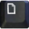
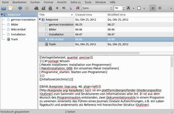
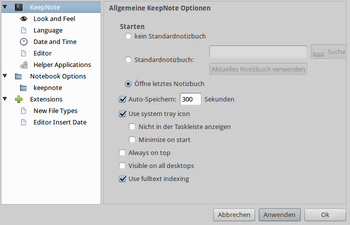

KeepNote
Dieser Artikel wurde für die folgenden Ubuntu-Versionen getestet:
Ubuntu 14.04 Trusty Tahr
Zum Verständnis dieses Artikels sind folgende Seiten hilfreich:

KeepNote  ist ein plattformübergreifender Gliederungseditor (Outliner) zum Sammeln und Strukturieren von Informationen aller Art. Er ist aus dem Wunsch des Programmautors Matt Rasmussen entstanden, zwei Dokumentationsstile in einem Programm zu vereinen: einerseits das Führen eines Journals (lineare Aufzeichnungen, z.B. ein Labor-Tagebuch) und andererseits als Referenz mit hierarchischer Struktur (Outliner).
ist ein plattformübergreifender Gliederungseditor (Outliner) zum Sammeln und Strukturieren von Informationen aller Art. Er ist aus dem Wunsch des Programmautors Matt Rasmussen entstanden, zwei Dokumentationsstile in einem Programm zu vereinen: einerseits das Führen eines Journals (lineare Aufzeichnungen, z.B. ein Labor-Tagebuch) und andererseits als Referenz mit hierarchischer Struktur (Outliner).
Des Weiteren standen offene Datenstrukturen im Vordergrund. Das Archivieren und Transferieren von Informationen sollte so einfach sein wie das Packen oder Kopieren eines Ordners. Während als Formate HTML und XML zum Einsatz kommen, verwendet KeepNote zum Speichern tatsächlich keine einzelne Datei wie andere Programme, sondern einen Ordner.
Ein integrierter Editor mit zahlreichen Formatierungsmöglichkeiten (Rich-Text) und eine Volltextsuche runden das Programm ab. Erstellt wurde es mit Python. Wenn es etwas weniger komplex sein darf: Im Artikel Notizen sind einfachere Alternativen zu finden.
Installation¶
 Das Programm ist ab Ubuntu 12.10 in den offiziellen Paketquellen enthalten. Folgendes Paket muss installiert [1] werden:
Das Programm ist ab Ubuntu 12.10 in den offiziellen Paketquellen enthalten. Folgendes Paket muss installiert [1] werden:
keepnote (universe)
 mit apturl
mit apturl
Paketliste zum Kopieren:
sudo apt-get install keepnote
sudo aptitude install keepnote
Um eine deutsche Benutzeroberfläche zu erhalten, siehe Problembehebung. Man kann das Paket keepnote  herunterladen und manuell installieren [2].
herunterladen und manuell installieren [2].
Fremdpaket¶
Alternativ kann man ein Fremdpaket von der Projektseite herunterladen und manuell installieren.
Hinweis!
Fremdpakete können das System gefährden.
Manuell¶
Wie bei Python-Programmen üblich kann man auch die Archivdatei mit dem Quellcode (keepnote-0.x.y.tar.gz) herunterladen und entpacken [3]. Einen Programmstarter muss man bei Bedarf selbst erstellen.
Hinweis!
Fremdsoftware kann das System gefährden.
Verwendung¶
Bei Ubuntu-Varianten mit einem Anwendungsmenü erfolgt der Start [4] über den Menü-Eintrag "Büro -> KeepNote". Ansonsten gibt man einfach den Programmnamen in der Dash ein.
|  |
| Fensteraufteilung in Keepnote |
Ein wichtiger Unterschied im Vergleich mit anderen Outlinern: die Baumansicht links besteht aus Ordnersymbolen, in die nicht nur weitere Unterordner eingefügt werden können, sondern auch neue Seiten. Dies führt zur Aufteilung des üblicherweise rechts angeordneten Editorfensters: rechts oben sind die einzelnen Seiten zu sehen, rechts unten befindet sich der eigentliche Editor zur Eingabe. Dieses Konzept ist die Basis für die eingangs erwähnte Möglichkeit, sowohl ein Journal zu führen als auch eine strukturierte Gliederung umzusetzen.
Über (benennbare) Reiter (Tabs) können weiter auseinanderliegende Teile eines Notizbuchs bequem angesteuert werden, ohne lange blättern zu müssen. Dies entspricht praktisch der Funktion "Fenster teilen" in anderen Programmen. Diese benutzerdefinierte Ansicht wird mit dem Notizbuch gespeichert und bei einem Neustart von KeepNote automatisch wiederhergestellt.
Falls die standardmäßig verwendeten Ordnersymbole nicht gefallen: über das Kontextmenü  können diese einfach geändert werden.
können diese einfach geändert werden.
Editor¶
Der integrierte Editor ist eine der Stärken des Programms. Im Gegensatz zu den eher bescheidenen Möglichkeiten von Programmen wie Notecase (die bewusst einfach gehalten sind) sind auch Tabellen und Listen kein Problem. Bilder werden eingebettet (nicht verknüpft). Da die Bildabmessungen unter Umständen nicht dem verfügbaren Platz entsprechen, können sie skaliert (verkleinert) dargestellt werden (das Originalbild bleibt erhalten). Ein nützliches Werkzeug im Zusammenhang mit Bildern ist die Einbindung eines frei wählbaren Programms für Bildschirmfotos.
Des Weiteren sind interne Links (zu anderen Teilen des Notizbuchs), externe Links (ins Internet) und Anhänge (beliebige lokal gespeicherte Dateien) vorgesehen.
Rechtschreibprüfung¶
Eine nur unter Linux und Mac OS X vorhandene Rechtschreibprüfung rundet die umfangreichen Editor-Funktionen ab. Dazu müssen folgende Pakete installiert sein (Beispiel für Deutsch und Englisch):
python-gnome2-extras
aspell
aspell-en (englische Rechtschreibung)
aspell-de (deutsche Rechtschreibung)
mit apturl
Paketliste zum Kopieren:
sudo apt-get install python-gnome2-extras aspell aspell-en aspell-de
sudo aptitude install python-gnome2-extras aspell aspell-en aspell-de
Nun kann man die Rechtschreibprüfung über "Werkzeuge -> Rechtschreibung" aktivieren bzw. deaktivieren.
Volltextsuche¶
Eine weitere Komfortfunktion, die ähnliche Programme oft nicht anbieten, ist die Volltextsuche innerhalb eines geöffneten Notizbuchs. Da häufig nachgefragt: das Suchfeld rechts oben im Programmfenster scheint auf kleinen Bildschirmen nicht vorhanden zu sein. Der Programmautor empfiehlt dann, über "Bearbeiten -> Einstellungen -> Aussehen -> Minimale Symbolleiste verwenden" den Platzverbrauch anderer Funktionen zu begrenzen.
Drucken¶
Bisher ist keine Druckfunktion vorhanden. Abhilfe schafft die Funktion "Anzeigen -> Notiz im Webbrowser anzeigen". Über diesen kleinen Umweg kann dann doch gedruckt werden. Auf die gleiche Art und Weise lassen sich auch PDF-Dateien erzeugen.
Import/Export¶
Über Erweiterungen mit der Endung .kne ist es möglich, bestehende Inhalte aus BasKet, NoteCase oder im Textformat zu übernehmen. Interessant ist auch die Funktion, einen "Folder tree", also einen bestehenden Ordner mit Unterordnern als Struktur zu importieren.
Ein Export ist nur im Format HTML und als Archivdatei (.tar.gz, zur Datensicherung) vorgesehen. Einzelne Notizen können aber auch im PDF-Format gespeichert werden (siehe Drucken).
Einstellungen¶
 Die umfangreichen Einstellungsmöglichkeiten sind in einzelne Reiter untergliedert. Zu den wichtigsten gehören:
Automatisches Speichern (Angabe in Sekunden)
Menü-Schriftgröße (Application Font Size)
Hilfsprogramme (Helper applications):
Webbrowser
Dateimanager
Texteditor
Bildbearbeitungsprogramm
Bildbetrachter
Anwendung für Bildschirmfotos
Verwaltung von Erweiterungen
Gespeichert werden Programmeinstellungen im Ordner ~/.config/keepnote/ im Homeverzeichnis.
Sonstiges¶
Datensynchronisation¶
Da KeepNote einen Ordner (bzw. eine Ordnerstruktur) verwendet, kann man diesen mit Hilfe eines Cloud-Dienstes leicht auf unterschiedlichen Rechnern synchron halten.
Problembehebung¶
Keine deutsche Programmoberfläche¶
Durch einen Fehler erkennt KeepNote 0.7.8. weder die Systemsprache noch lässt sich die Sprache auf Deutsch umstellen (Issue 503 ). Abhilfe schafft die Umbenennung des Ordners mit der Übersetzung [5]:
sudo mv /usr/lib/python2.7/dist-packages/keepnote/rc/locale/de_DE.UTF8 /usr/lib/python2.7/dist-packages/keepnote/rc/locale/de_DE
Beim nächsten Programmstart sollte die Sprache nun automatisch erkannt werden. Zwar ist die deutsche Übersetzung nicht komplett, aber deutlich umfangreicher als vor diesem Eingriff.
Links¶
KeepNote im franz. Ubuntu-Wiki
Exporting KeepNote notebooks as FreeMind mind maps
- Blogbeitrag, 11/2011Notizen
 Übersichtsartikel
Übersichtsartikel
- Erstellt mit Inyoka
-
 2004 – 2017 ubuntuusers.de • Einige Rechte vorbehalten
2004 – 2017 ubuntuusers.de • Einige Rechte vorbehalten
Lizenz • Kontakt • Datenschutz • Impressum • Serverstatus -
Serverhousing gespendet von